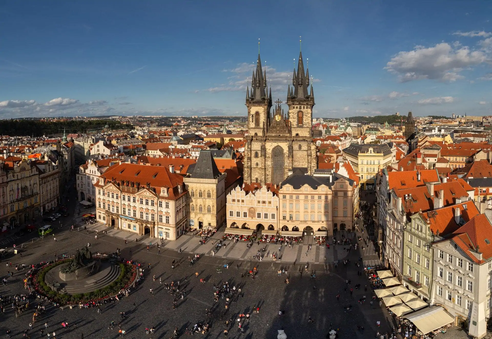

Prag, gezginlerin uğrak noktası olan bir masallar kenti olarak anılır. Avrupa’da yaşanan savaştan zarar görmeden çıkmayı başaran kent zaman makinesinden fırlamış hissini gezginlere sağlamaktadır. Kentte yer alan mimari ve kültür ile tüm güzelliğini gözler önüne sermektedir. Prag gezi rehberi olarak kent hakkındaki tüm detaylara yazımızdan ulaşabilirsiniz.
Prag nerede sorusunun cevabı gezginler için oldukça önemlidir. Gerekli vizelerin ve pasaportların sağlanması için sorunun cevaplanması gerekir. Prag, Çek Cumhuriyeti’nde yer alan en büyük şehirdir. Sahip olduğu atmosfer ve büyüsü ile gezginlerin uğrak noktası olan bir şehirdir. Çek Cumhuriyeti’nin başkenti olan şehir en kalabalık nüfusa sahip olan kenttir. Prag şehri denildiği zaman akıllara gelen pek çok benzetme bulunur. “Avrupa’nın Kenti”, “Masallar Şehri”, “Altın Şehir” olarak pek çok benzetmeye tabi tutulmuştur. Şehir dünya edebiyatında önemli bir yeri olan Franz Kafka ile turist çekmektedir. Şehir sahip olduğu atmosfer ile 5 Nobel ödülüne sahip olmuştur.
Prag gezi rehberi bilgileriniz arasında şehrin anılan isimlerinin yanı sıra hikayesini bilmeniz gerekir. Çekçe dilinde “Praha” olarak anılan şehir bazı rivayetlere göre ismini nehirden geçen pervazlardan almaktadır. Savaş yıllarında ekonomik açıdan zarar görmüş olan şehir tarihi mimarilerini zararsız olarak atlatmıştır. Bu yüzden gezginlerin şehre ulaştıktan sonra zaman makinesini andıran bir mimari yapı ile karşılaşması ve tarihin sokaklarında dolaşması mümkündür.
Prag’a nasıl gidilir sorusunun cevabına göre gezginlerin bütçelerini hazırlaması ve planlama yapması mümkündür. Tarihi bir atmosferde Avrupa’nın Kenti’ni ziyaret etmek isteyen ziyaretçilerin yeşil pasaporta sahip olması gerekir. Yeşil pasaportunuz yoksa bir diğer seçenek ise Schengen Vizesi alınmasıdır. Alınan pasaport veya vizeye göre Prag için yolculuğa çıkılması mümkündür.
Prag gezi rehberi bilgileriniz arasına Prag’da tek bir havalimanı olduğunu eklemelisiniz. Şehrin sahip olduğu havalimanı merkezin 20 km güneyinde kalır. Havalimanın ismi ise Vaclav Havel Havalimanı’dır. İstanbul şehrinden Prag şehrine direkt olarak uçuş bulunmaktadır ve uçuş saati 2 saat 40 dakikadır. Uçak ile şehrin büyüsüne kapılmak isterseniz aynı zamanda aktarmalı uçuş seçenekleri bulunuyor. Aktarmalar ile farklı şehirlere uğrayarak yaklaşık olarak 6-7 saatlik yolculuk yapmak gerekiyor. Prag şehrine ulaşım aynı zamanda bazı Avrupa ülkelerinden kalkan trenler ile sağlanabiliyor. Almanya, Hollanda, Fransa ve Belçika gibi ülkelerden düzenli olarak Prag’e giden otobüs ve tren seferleri bulunuyor.
Prag’a ne zaman gidilir sorusu için kesin bir yanıt yoktur. Şehrin her mevsimi oldukça güzel ve özel anların yaşanmasına yardımcı olur. Sahip olduğu yapılar her mevsim ayrı bir güzellik ve atmosfer ile gezginleri karşılar. Şehre kışın gitmek isterseniz unutmamanız gereken bir nokta şehrin kışlarının oldukça sert geçtiğidir. Ocak ve şubat aylarında şehrin sıcaklığı en düşük olan dereceleri görmektedir. Bu aylarda kenti ziyaret edecek olan kişilerin kazaklarını ve kalın giyeceklerini yanına alması önerilir. Prag şehrinde hava durumunu tahmin etmek oldukça zordur. Kar yağışlarının yoğun olduğu şehirde bazen kar yağışı aralık ayında başlar ve mayıs ayına kadar devam eder.
Prag gezi rehberi notlarına göre eğer turistlerin yoğun olduğu zamanlarda şehre gitmek istemiyorsanız kış en uygun olan zamandır. Ancak soğuk havaları sevmiyorsanız şehri yaz aylarında ziyaret edebilirsiniz. Yaz aylarında özellikle haziran ve ağustos ayları şehrin en sıcak olduğu aylardır. Yaz aylarında şehir kuraktır ama geceleri yağması muhtemel olan yağmurlara sahiptir. Yaz aylarında bile akşam yağmurlarına karşı gezginlerin yanlarına hırka gibi eşyalar alması önerilir.
Prag gezi rehberi notlarınız arasında mutlaka bulunması gereken gezilecek yerler arasında Old Town Meydanı yer alır. Bu meydan tarihin pek çok olayına şahitlik etmiştir ve Franz Kafka’nın yaşadığı yerde bu meydandadır. Meydanın asıl ismi “Statomestske Namesti” şeklindedir. Meydanda yer alan mimari yapılar savaşlardan ve birçok tarihi olaydan sağ çıkarak günümüze kadar gelmiştir. Prag’a giden kişilerin mutlaka gezilecek yerler listene bu meydanı eklemesi önerilir. Astronomik Saat, Eski Belediye Sarayı ve Jan Hus Anıtı ile çevrili olan meydan oldukça dikkat çekicidir.
Prag gezilecek yerler arasında Franz Kafka Anıtı bulunur. Anıt, Quadrio adındaki alışveriş merkezinin girişinde yer alır. Çelik ve aynaların birleştiği anıt gün boyunca hareket ederek 15 farklı şekilde poz oluşturur. Prag’da gezilecek yerler arasında Charles Köprüsü’nü eklemenizde fayda vardır. Panaromik bir manzaranın hakim olduğu köprü gezginlerin uğrak noktası olan alanlardan biridir. Kral 4. Charles tarafından yaptırılmış olan köprü üzerinde yer alan heykelleri ile dikkatleri çekiyor.
Prag’da gezilecek yerler listenize eklemeniz gereken bir diğer yer ise John Lennon Duvarı. Özgürlük simgesi olarak kabul edilen bu duvar özgürlük duygusunu içinizde hissedebileceğiniz yerlerden biridir. 1980 yılında öldürülen sanatçıya ithafen yapılmış grafiklerle dolu olan duvar bir anıt haline gelmiştir ve gezginlerin uğrak noktası olan bir yerdir.
Prag Kalesi şehrin en önemli mimari eserlerinden biridir. Şehre giden her gezginin Prag Kalesi’ni ziyaret etmesi önerilir. Kale uzun süredir kullanıldığı için pek çok milletin mimari yapısını içerisinde barındırıyor. Mimari dönemlerin izlerini yakından görmek için kalenin ziyaret edilmesi yeterlidir. Prag gezi rehberi listenize eklemeniz gereken bir diğer yer ise Prag Dans Eden Ev’dir. Bu evin önünde çekilmeye çalışılan fotoğraflar oldukça meşhurdur ve yaratıcılığın öne çıkabileceği yerler arasındadır. Şehirde hakim olan tarihi yapıya göre dans eden ev oldukça modern bir havaya sahiptir. Gezginlerin görmesi için önerilen yerler arasında yer alan evi görmeden Prag’dan ayrılmamanız tavsiye edilir.
Asimetrik Kuleli Tyn Kilisesi masalsı ve destansı görüntüsü ile dikkat çekmektedir. Kilisenin görüntüsü öyle büyüleyicidir ki Disney şatosunun buradan ilham alındığı dolaşan efsaneler arasında yer alır. Şehrin her yerinden gözüken kilise oldukça dikkat çekicidir. Prag aynı zamanda müzelerin öne çıktığı bir şehirdir. Sahip olduğu müzelerin her biri önemlidir ve ziyaret edilmesi önerilir. Ancak müzeler arasında en fazla öne çıkanlar Mumya Müzesi, İşkence Müzesi, Karel Zeman Müzesi, Mucha Müzesi ve Komünizm Müzesi’dir.
Prag gezi rehberi listesinde yapılacakların yer alması oldukça önemlidir. Prag’da ne yapılır sorusu ise şehirde verimli zaman geçirmek için önemlidir. Şehir sahip olduğu ilham ile pek çok şeyin yapılmasına imkan sağlar. Prag şehrini gezecek olan kişilere yapılacaklar önerisi ise şu şekilde sıralanabilir:
Prag’a ulaşım oldukça çeşitlidir ve kolaylıkla sağlanabilir. Şehir bir havalimanına sahiptir. Kent merkezi ve kentin içinde yolculuk yapabilmek için pek çok seçenek bulunur. Havalimanı ulaşımlarının yanı sıra şehirde demiryolu ile ulaşım yapabilme şansı bulunur. Aynı zamanda gece ve gündüz sürekli seferler yapan otobüsler bulunur. Prag gezi rehberi listenize göre yürüme mesafesinde olan yerleri yürüyerek ziyaret edebilirsiniz. Şehirde aynı zamanda metro ve taksi ile ulaşım yapılabilme şansı bulunur.
Prag’da ne yenir sorusu gezginlerin en çok merak ettiği sorular arasında yer alır. Şehirde gezerken yemek kokularının geldiği sokaklarda doğru ve yöresel yiyecekleri yiyerek gezi keyfinizi zirveye taşıyabilirsiniz. Prag’ın her sokağında hemen hemen bir sosisçi vardır. Gezileriniz esnasında sosisçilerden alınacak yiyecekler ile buluşabilirsiniz. Prag yöresel lezzetleri arasında ‘trdelnik’ ismi verilen tatlı yer alır. Sokak lezzetleri arasında olan tatlıyı deneyerek gezinizi tatlandırabilirsiniz.
Prag gezi rehberi ile gezdiğiniz yerlerden alışveriş ve hediyelik eşya almak isterseniz seçenekleriniz oldukça fazladır. Prag’da alışveriş denildiği zaman Old Town Meydanı öne çıkar. Caletna Caddesi ve Na Prikope Caddesi alışveriş için oldukça fazla dükkanın olduğu yerler arasında bulunuyor. Wenceslas Meydanı ve Lucerna Pasajı alışveriş için uğranabilecek olan yerler arasındadır.
Prag gece hayatı oldukça hareketlidir. Gezginlerin eğlenmesi için pek çok gece kulübü yer alır ve şehirdeki hareket hiç bitmez. Ünlü DJ’lerin geldiği barlar gece geç saatlere kadar açık olarak misafirlerini ağırlıyor. Gezginlerin gece hayatını yaşabileceği şehir Avrupa’nın en güvenli olan şehirlerinden biridir. Şehirde gezginlerin eğlenmek için değerlendirebileceği pek çok bar, gece kulübü ve eğlence merkezi bulunur.